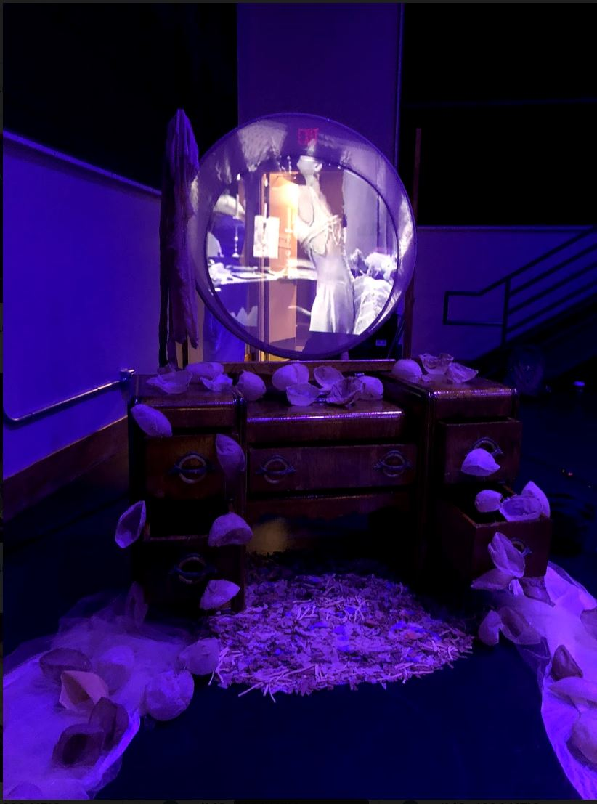
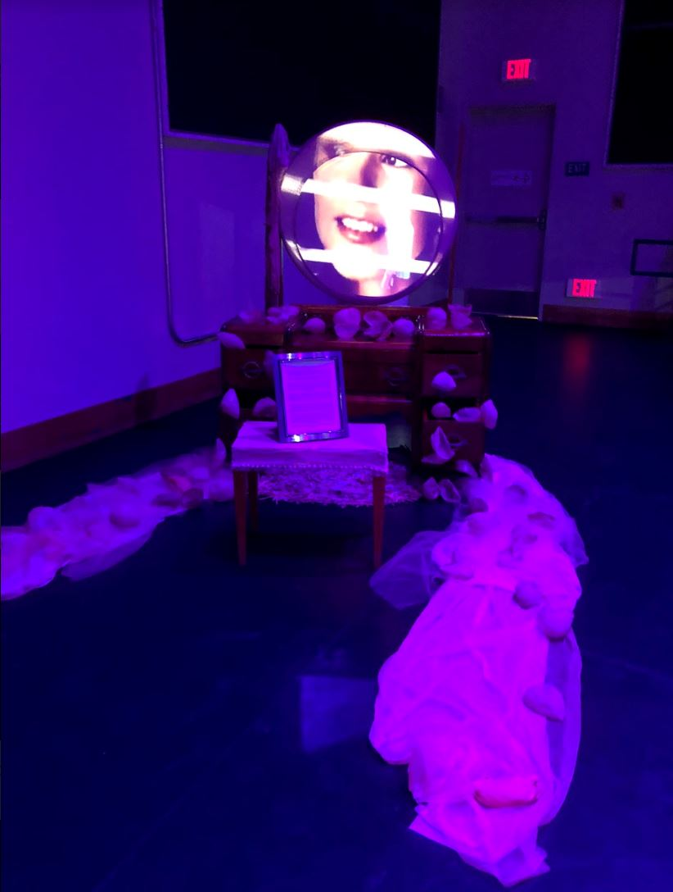
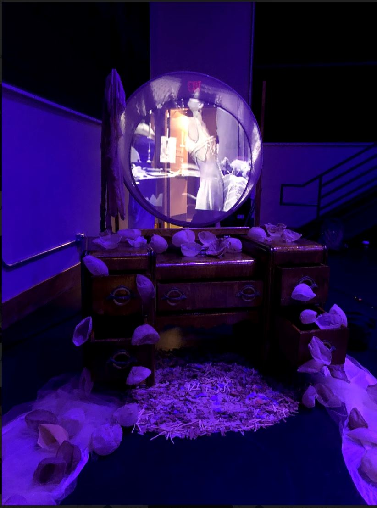
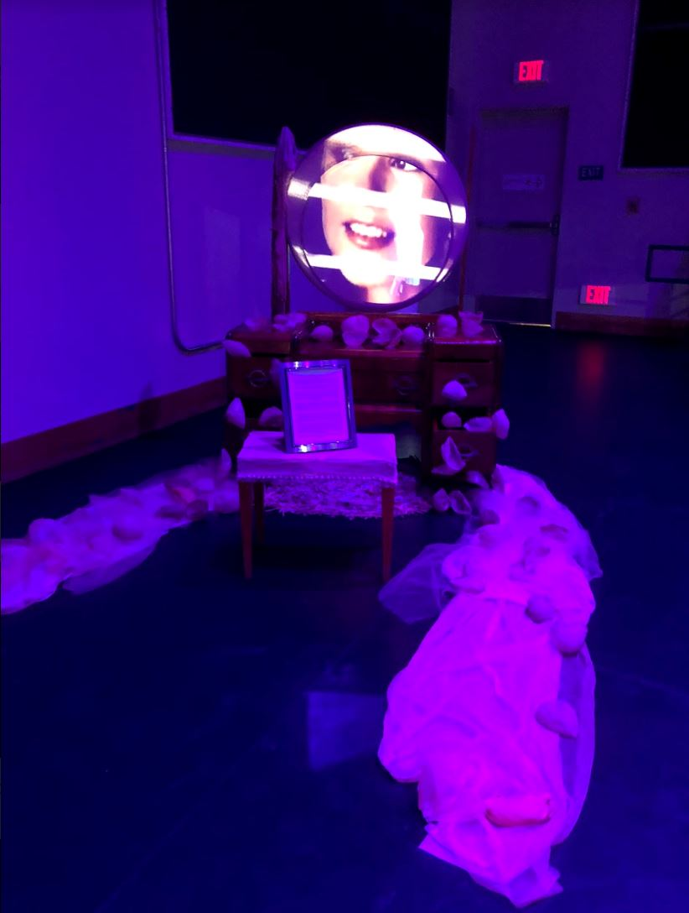

Objects of Vanity
Chelsea Simmons
ARTIST STATEMENT
Pantyhose. A loaded word that carries many connotations; oppression, empowerment, practicality and professionalism. Every woman has had some form of experience with this article of clothing.
Sheer modern day pantyhose was invented by Ethel Gant, the wife of textile guru Allen Gant Sr. (who received all the credit) in 1959. The inspiration came from pure practicality, sort of. During her pregnancy, Ethel struggled with attaching a girdle and tights in seperate pieces over her baby belly.
While it seems peculiar that one might risk endangering themselves and their baby solely to define their waist, we know from history that this isn't such a novel situation. Women throughout history have always gone to extreme lengths to beautify themselves. In 1936 Isabella Gilbert invented the dimple machine, a device that would hold onto and press into ones cheeks for hours in an attempt to recreate variations in muscle structure.
We worry about a woman when she has extra weight or other “unpleasant” characteristics. We are called out for our misteps when we don't do our hair, makeup or smile. Deep down, many of us are engrained to feel like reminding a woman to smile or use portion control helps her succeed. This control over women filters down into their sexuality, where a line blurs between independence and performative action. We feel the same guilt “exploring our pleasure loving side,” whether or not we are having sex or eating a biscuit. We try to regain mental and physical control over our bodies through the resistive materials we adhere.
When we speak about the dangers of media we tend to think of the most obvious; rape culture, models with eating disorders, “Frankenstein Photoshop,” etc. These are huge problems, but where do they start? They begin with small subtle knives of a belief system created by lifelong subliminal messages that brew under the surface of our unseen subconscious. The life of a woman is defined by a series of moments of receiving misguided advice paved with good intentions. We have been conditioned to be this way for a long time, first through television and advertising, to the more current trends of social media.
Now a social media account can tell us how to be the perfect woman in the blink of an eye. This bombardment of inventions and self help videos are meant to be acts of sisterhood but in reality continue to tear us down while also building walls. We are continually taught that we will have more opportunities, more chance for growth and more money if we are joined by a man, which will only happen if we behave a certain way. Soft violence against women starts with the media and permeates our society like an infectious disease. We are standing in the way of our own movement by reinforcing these ideas. This mentality lends itself to further violence and objectification that hold women back and reinforces the equality gap.
Vanity becomes life threatening, not only physically but also by killing our internal wants, happiness and identities.
This piece is about being mindful and aware of your actions. Are these actions for you or for somebody else? Do you treat other women around you based on the ideas that you have absorbed from the dictates of society and standards of cultural beauty? Maybe you are projecting your own struggles onto them. Next time you are in a public restroom take note of how the sink might be designed. Are there vanity lights reminiscent of the 1940s Hollywood heyday? Perhaps the mirror is round. While these might be attractive and familiar aesthetics, consider the engrained societal ideas that put these design choices there. The vanity has been laid out for you as a place of reflection as well as a place for your expected daily laborious tasks.
Objects of Vanity is dedicated to the silent revolutions and continuous coming of age of women everywhere.
Initially this piece was shown in Gallery III inside the Art Building at San Jose State in a solo exhbit. The piece definetely thrived in its own space, whereas it struggled to be heard with the other media in this space. The vanity was on a riser in the gallery and gave it a bit more power. The eggs did have a beautiful glow of their own under the black lights. The warm tones of the vanity were a bit lost in the dark glow of this space, although still beautiful.
.
 


